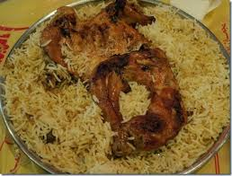

Mandi

Mandi is a traditional Arabian rice dish made with fragrant rice, spices, and slow-cooked chicken or meat.
It is known for its rich flavor and tender meat.
Ingredians
- Long-grain rice
- Chicken or lamb
- Mandi spice mix
- Onions
- Garlic
- Tomatoes
Steps
- Season the chicken with mandi spices.
- Cook the chicken until tender.
- Prepare the rice with spices and stock.
- Place the cooked chicken over the rice.
- Cook together on low heat for a few minutes.
- Garnish with nuts or raisins if desired.
- Serve hot and enjoy.